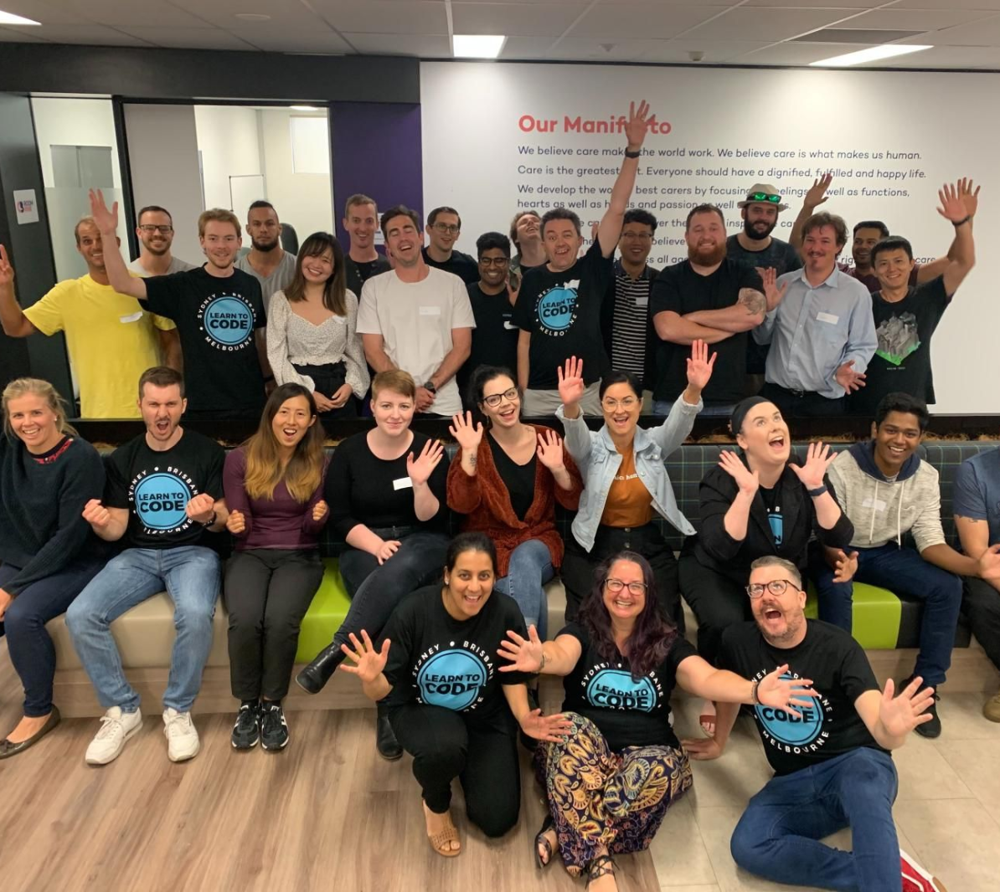
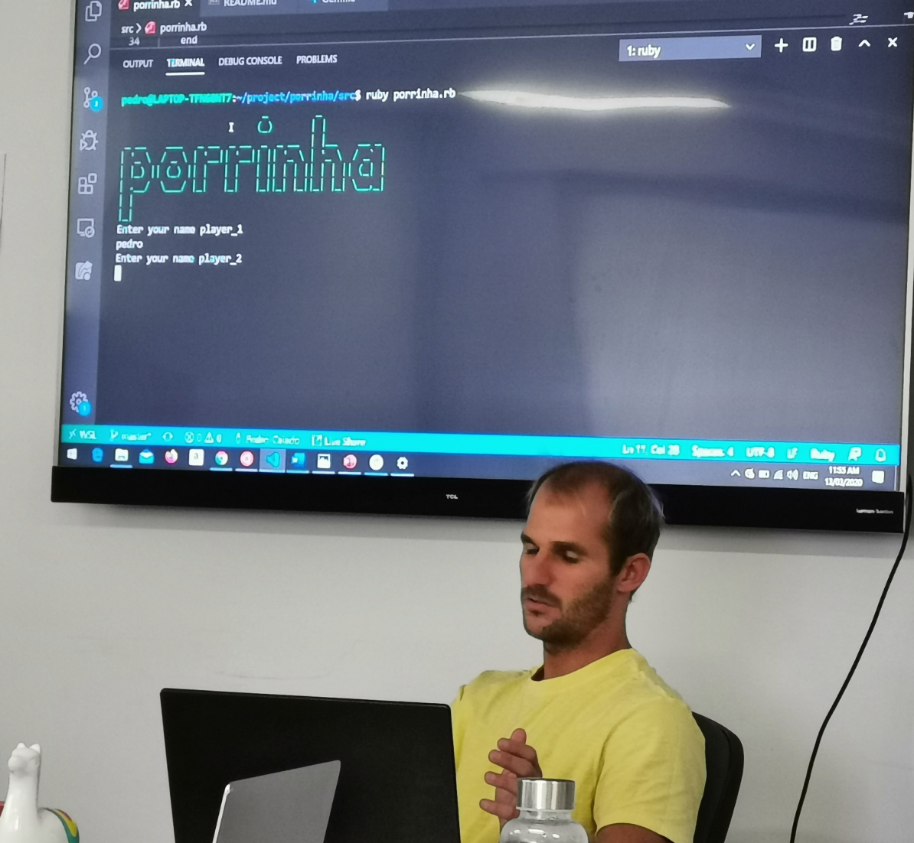

Lawyer
I have completed my Bachelor’s Degree in law at Faculdade de Direito de Vitoria (FDV) – 2007-2012. - Brazil

Business
I came to Australia to study english. After completed the general english school, I began my journey studying business at Gold Coast Learning Centre located on the Gold Coast.- General English – Holmes School in Australia - 2014;
- BSB20112 Certificate II in Small Business – Gold Coast Learning Centre - 2015;
- BSB30412 Certificate III in Business Administration – Gold Coast Learning Centre – 2015;
- BSB40215 Certificate IV in Business - 2016;
Full Stack Student, Web Development
I am studying diploma in information technology at Coder Academy. The journey has been a challenge, considering that I am changing career. But I am always looking for new challenges, and I am sure that I will be able to complete the course to achieve one more goal in life. I intend to work in the area as a web developer. I love technology and I am happy to be part of it. I have uploaded pictures of our team in the Bootcamp at Coder Academy
 